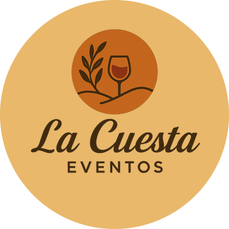

Antes deservir la mesa,empiezael oficio.
La gastronomía conduce la experiencia. Preparación, servicio y coordinación sostienen cada momento.
Gastronomía y servicio para eventos · Jujuy

ContactanosLa gastronomía conduce la experiencia. Preparación, servicio y coordinación sostienen cada momento.
Gastronomía y servicio para eventos · Jujuy
Manos, temperatura y terminación: cada pase se construye mientras el encuentro avanza.
La propuesta se adapta al lugar, al ritmo del encuentro y a la forma en que querés recibir.
Catering · barra · personal · puesta a punto
Casamientos, eventos corporativos, cumpleaños y reuniones familiares, de la primera idea al último brindis.
Ver eventos realizadosLas locaciones asociadas están disponibles únicamente junto con la contratación del catering La Cuesta.
Esta estructura será reemplazada por los casos, fotografías y testimonios aprobados. Mientras tanto muestra cómo la evidencia continuará el relato.
Vista previa editorial · contenido provisional
Caso piloto · evidencia disponible


Preparación
El registro autorizado permite mostrar preparación, servicio y encuentro. El desafío, el menú y la solución se incorporarán cuando estén confirmados.
Testimonio pendiente de aprobación.
— Atribución por confirmar
Próximo caso · fotografías pendientes
Aquí se integrarán apertura, comida, preparación, servicio y atmósfera del segundo evento.
Testimonio pendiente de aprobación.
— Atribución por confirmar
Próximo caso · fotografías pendientes
El tercer caso completará la diversidad de formatos sin mezclar experiencias ni inventar resultados.
Testimonio pendiente de aprobación.
— Atribución por confirmar
La conversación empieza por el evento: fecha, tipo de encuentro y la experiencia que imaginás.
Consultar mi evento